Mon, 19 Nov 2012 10:00:00 -0600
Scott's Grotto
Scott's Grotto
Scott's GrottoFantastically decorated underground chambers built in the 1760s"None but a poet could have made such a garden" wrote Dr. Samuel Johnson of Scott's Grotto.
Begun in the 1760s by Quaker, poet and businessman John Scott, the shell grotto was a fashionable garden decoration for the upperclass of 1700s England. However John Scott went a few steps further then the usual garden grotto, having six interconnected chambers and sixty seven feet of tunnel dug into the chalk hillside below his garden.
Decorated with shells, broken glass, flint, fossils and other beautiful stones pressed into the cement walls, in one chamber a seat bears the word "Frog" referring to a nickname of Scott's wife Sarah Frogley. Dr. Johnson called the Grotto a "fairy hall."
There are a number of theories as to why the Scott built the extensive grotto - a cool place to read in summer, a quiet place for Scott to write poetry, a reason for friends to visit the Quaker poet who disliked going to London - all of which may be true.
However the most interesting and charitable of the reasons is that as a wealthy and devout Quaker Scott felt it his duty to provide employment for the unemployed men of the area. If this is the case he certainly succeeded, the grotto is thought to have taken thirty years to complete.Read more about Scott's Grotto on Atlas Obscura...Category: Follies and Grottoes, Outsider Architecture, Subterranean SitesLocation: Ware, United KingdomEdited by: Rubbah, Dylan, Rachel
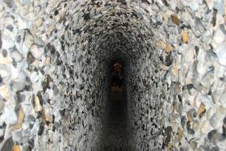
Scott's Grotto
Fantastically decorated underground chambers built in the 1760s"None but a poet could have made such a garden" wrote Dr. Samuel Johnson of Scott's Grotto.
Begun in the 1760s by Quaker, poet and businessman John Scott, the shell grotto was a fashionable garden decoration for the upperclass of 1700s England. However John Scott went a few steps further then the usual garden grotto, having six interconnected chambers and sixty seven feet of tunnel dug into the chalk hillside below his garden.
Decorated with shells, broken glass, flint, fossils and other beautiful stones pressed into the cement walls, in one chamber a seat bears the word "Frog" referring to a nickname of Scott's wife Sarah Frogley. Dr. Johnson called the Grotto a "fairy hall."
There are a number of theories as to why the Scott built the extensive grotto - a cool place to read in summer, a quiet place for Scott to write poetry, a reason for friends to visit the Quaker poet who disliked going to London - all of which may be true.
However the most interesting and charitable of the reasons is that as a wealthy and devout Quaker Scott felt it his duty to provide employment for the unemployed men of the area. If this is the case he certainly succeeded, the grotto is thought to have taken thirty years to complete.
Read more about Scott's Grotto on Atlas Obscura...
Category: Follies and Grottoes, Outsider Architecture, Subterranean Sites
Location: Ware, United Kingdom
Edited by: Rubbah, Dylan, Rachel
Mon, 19 Nov 2012 09:57:00 -0600
Sir Richard Burton's Tent-Tomb
Sir Richard Burton's Tent-Tomb
Sir Richard Burton's Tent-Tomb Eclectic final resting place of the controversial explorerIn the quiet churchyard of St. Mary Magdalen's catholic Church, an expedition-style tent marks the final resting place of Richard Francis Burton and his doting wife, Isabel Arundell. The eclectic design reflects Burton's life-long fascination with all things Arabian, but also incorporates Catholic symbolism important to his devout wife. Not quite a Bedouin or Arab design, the shape of the mausoleum is believed to be based on the tent that the Burtons shared during their stay in Syria. Through a small window in the back (which can be reached by climbing the attached ladder), their side-by-side caskets are still visible.
Burton was a renowned explorer of the Victorian age, a celebrated linguist and writer, and a scandalous translator of naughty exotic books. As a young man expelled from Oxford for horse racing, he enlisted with the army of the East India Company where he honed his gift for languages by learning several local dialects of Hindi, as well as Persian and Arabic. Ultimately he was said to have mastered some 29 languages. His first taste of fame came from his 1853 infiltration of Mecca in disguise. He solidified that fame in later years during his African expeditions for the Royal Geographical Society, pushing into the interior of the continent in search of the source of the Nile River.
in 1861 he married Isabel Arundell, who was to spend her married years awaiting his return from far flung adventures or following him to the edges of the map. The couple lived together in Brazil, in Damascus, Syria, and finally in Trieste, Italy, where Richard translated and published his most famous and scandalous works: "The Kama Sutra," "The Arabian Nights," and "The Perfumed Garden." Now widely considered to be erotic masterpieces, at the time they were received as pornography - although not without some enthusiasm from readers of a certain persuasion.
After Richard's death in 1890, Isabel famously burned many of his papers and at least one manuscript (another translation of "The Perfumed Garden"), an act she defended as being done to protect his reputation and legacy, but for which history has not quite forgiven her. In accord with his final wishes, she had his unique tent-shaped mausoleum built, with a stained glass window installed so visitors can look in and view the coffins inside. She also donated the Burton Memorial Window inside the church, somewhat entertainingly depicting three saints and the man who quipped, "the more I study religions the more I am convinced that man never worshiped anything but himself" dressed as a Christian Knight at prayer.
Isabel died in 1896, and joined Burton in his tent.Read more about Sir Richard Burton's Tent-Tomb on Atlas Obscura...Category: Memento Mori, Catacombs, Crypts, & Cemeteries, Dead ExplorersLocation: London, United KingdomEdited by: Annetta, Nicholas Jackson, trez, Rachel
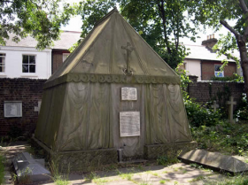
Sir Richard Burton's Tent-Tomb
Eclectic final resting place of the controversial explorerIn the quiet churchyard of St. Mary Magdalen's catholic Church, an expedition-style tent marks the final resting place of Richard Francis Burton and his doting wife, Isabel Arundell. The eclectic design reflects Burton's life-long fascination with all things Arabian, but also incorporates Catholic symbolism important to his devout wife. Not quite a Bedouin or Arab design, the shape of the mausoleum is believed to be based on the tent that the Burtons shared during their stay in Syria. Through a small window in the back (which can be reached by climbing the attached ladder), their side-by-side caskets are still visible.
Burton was a renowned explorer of the Victorian age, a celebrated linguist and writer, and a scandalous translator of naughty exotic books. As a young man expelled from Oxford for horse racing, he enlisted with the army of the East India Company where he honed his gift for languages by learning several local dialects of Hindi, as well as Persian and Arabic. Ultimately he was said to have mastered some 29 languages. His first taste of fame came from his 1853 infiltration of Mecca in disguise. He solidified that fame in later years during his African expeditions for the Royal Geographical Society, pushing into the interior of the continent in search of the source of the Nile River.
in 1861 he married Isabel Arundell, who was to spend her married years awaiting his return from far flung adventures or following him to the edges of the map. The couple lived together in Brazil, in Damascus, Syria, and finally in Trieste, Italy, where Richard translated and published his most famous and scandalous works: "The Kama Sutra," "The Arabian Nights," and "The Perfumed Garden." Now widely considered to be erotic masterpieces, at the time they were received as pornography - although not without some enthusiasm from readers of a certain persuasion.
After Richard's death in 1890, Isabel famously burned many of his papers and at least one manuscript (another translation of "The Perfumed Garden"), an act she defended as being done to protect his reputation and legacy, but for which history has not quite forgiven her. In accord with his final wishes, she had his unique tent-shaped mausoleum built, with a stained glass window installed so visitors can look in and view the coffins inside. She also donated the Burton Memorial Window inside the church, somewhat entertainingly depicting three saints and the man who quipped, "the more I study religions the more I am convinced that man never worshiped anything but himself" dressed as a Christian Knight at prayer.
Isabel died in 1896, and joined Burton in his tent.
Read more about Sir Richard Burton's Tent-Tomb on Atlas Obscura...
Category: Memento Mori, Catacombs, Crypts, & Cemeteries, Dead Explorers
Location: London, United Kingdom
Edited by: Annetta, Nicholas Jackson, trez, Rachel
Mon, 19 Nov 2012 09:41:00 -0600
Pasaquan: Home of St. EOM
Pasaquan: Home of St. EOM
Pasaquan: Home of St. EOMThe artistic creation of the strange and mysterious St. EOM, a.k.a. Eddie Owens MartinAt one point in the late 1950s, during an extended and fever-ridden illness, Eddie Owens Martin experienced the first of a series of phenomenal visions that would drive his artistic efforts for the rest of his life.
In the initial vision, he was confronted by a trio of extraordinarily tall personages who identified themselves as people of the future—special envoys from a vaporous land called Pasaquan, "where the past, the present, the future, and everything else all come together."
He had been chosen by them, he later reported, to help us attain an understanding of the peace and beauty that the future might hold for mankind, if mankind would only take heed. On that day, Eddie Owens Martin of Marion County, Georgia, became, at least to himself, St. EOM - the one and only Pasaquoyan of the twentieth century.
Eddie Owens Martin left home at the young age of fourteen, after he saw his father kill a puppy that had been given to him as a gift. Eddie eventually settled in New York, working as "a male prostitute and minor-league hustler," and becoming a fixture of the emerging Greenwich Village arts scene, where he was nicknamed the Tattooed Countess. It was here that Eddie experienced his visions. Among the messages about "how to ritually prepare for the proper conduct of his personal daily existence" was that he was to "return to Georgia and do something."
That something is Pasaquan, an artistic environment built over thirty years, made of painted concrete sculptures and four acres (16,000 square meters) of painted masonry concrete walls. Pasaquan also includes six buildings, including a redesigned 1885 farmhouse. Inspired by his visions and smoking "a fat one" (a joint) Martin (or "Big Mama" as he known by locals in Buena Vista) single-handedly created an amazing, religiously symbol-laden, sometimes beautiful and sometimes lewd arts environment. After working on Pasaquan right up until illness made it impossible, Martin, at the age of 77, laid out an African chieftain's robe that he wished to be buried in and shot himself.
In his own words, Martin or St. EOM said of Pasaquan:
"I built this place to have somethin' to identify with, cause there's nothin' that I see in this society that I identify with or desire to emulate. Here I can be in my own world with my temples and designs and the spirit of God. I don't have nothin' against other people and their beliefs. I'm not askin' anybody to do my way or be my way. Although, when I'm dead and gone, they'll follow like night follows day."
Of course he also said:
"There's no place like this anywhere, and people will come and deface it when I die, and then everything I've done will be forgotten."
It remains to be seen which vision is the correct one.Read more about Pasaquan: Home of St. EOM on Atlas Obscura...Category: Museums and Collections, Outsider Art, Architectural Oddities, Eccentric Homes, Outsider ArchitectureLocation: Georgia, USEdited by: wythe, Rachel
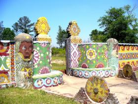
Pasaquan: Home of St. EOM
The artistic creation of the strange and mysterious St. EOM, a.k.a. Eddie Owens MartinAt one point in the late 1950s, during an extended and fever-ridden illness, Eddie Owens Martin experienced the first of a series of phenomenal visions that would drive his artistic efforts for the rest of his life.
In the initial vision, he was confronted by a trio of extraordinarily tall personages who identified themselves as people of the future—special envoys from a vaporous land called Pasaquan, "where the past, the present, the future, and everything else all come together."
He had been chosen by them, he later reported, to help us attain an understanding of the peace and beauty that the future might hold for mankind, if mankind would only take heed. On that day, Eddie Owens Martin of Marion County, Georgia, became, at least to himself, St. EOM - the one and only Pasaquoyan of the twentieth century.
Eddie Owens Martin left home at the young age of fourteen, after he saw his father kill a puppy that had been given to him as a gift. Eddie eventually settled in New York, working as "a male prostitute and minor-league hustler," and becoming a fixture of the emerging Greenwich Village arts scene, where he was nicknamed the Tattooed Countess. It was here that Eddie experienced his visions. Among the messages about "how to ritually prepare for the proper conduct of his personal daily existence" was that he was to "return to Georgia and do something."
That something is Pasaquan, an artistic environment built over thirty years, made of painted concrete sculptures and four acres (16,000 square meters) of painted masonry concrete walls. Pasaquan also includes six buildings, including a redesigned 1885 farmhouse. Inspired by his visions and smoking "a fat one" (a joint) Martin (or "Big Mama" as he known by locals in Buena Vista) single-handedly created an amazing, religiously symbol-laden, sometimes beautiful and sometimes lewd arts environment. After working on Pasaquan right up until illness made it impossible, Martin, at the age of 77, laid out an African chieftain's robe that he wished to be buried in and shot himself.
In his own words, Martin or St. EOM said of Pasaquan:
"I built this place to have somethin' to identify with, cause there's nothin' that I see in this society that I identify with or desire to emulate. Here I can be in my own world with my temples and designs and the spirit of God. I don't have nothin' against other people and their beliefs. I'm not askin' anybody to do my way or be my way. Although, when I'm dead and gone, they'll follow like night follows day."
Of course he also said:
"There's no place like this anywhere, and people will come and deface it when I die, and then everything I've done will be forgotten."
It remains to be seen which vision is the correct one.
Read more about Pasaquan: Home of St. EOM on Atlas Obscura...
Category: Museums and Collections, Outsider Art, Architectural Oddities, Eccentric Homes, Outsider Architecture
Location: Georgia, US
Edited by: wythe, Rachel
Mon, 19 Nov 2012 09:38:00 -0600
Maison de celle-qui-peint
Maison de celle-qui-peint
Maison de celle-qui-peintArtist Danielle Jacqui decorates nearly every inch of her home inside and out with her work.Ceramicist, embroiderer and painter Danielle Jacqui transformed her living quarters into a product of art. Beginning with the exterior and extending throughout the walls, ceilings and furniture of the interior, Jacqui's entire home is spread thick with embroideries, paintings and three-dimensional objects. Nearly every inch of the house has been festooned with her creations even the stairs.Read more about Maison de celle-qui-peint on Atlas Obscura...Category: Outsider Art, Eccentric Homes, Outsider ArchitectureLocation: Edited by: bboas, Rachel
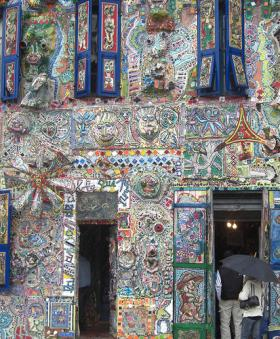
Maison de celle-qui-peint
Artist Danielle Jacqui decorates nearly every inch of her home inside and out with her work.Ceramicist, embroiderer and painter Danielle Jacqui transformed her living quarters into a product of art. Beginning with the exterior and extending throughout the walls, ceilings and furniture of the interior, Jacqui's entire home is spread thick with embroideries, paintings and three-dimensional objects. Nearly every inch of the house has been festooned with her creations even the stairs.
Read more about Maison de celle-qui-peint on Atlas Obscura...
Category: Outsider Art, Eccentric Homes, Outsider Architecture
Location:
Edited by: bboas, Rachel
Mon, 19 Nov 2012 09:14:00 -0600
The Bottle House
The Bottle House
The Bottle HouseHouse built with over 60,000 glass bottlesIn the small town of Kaleva, MI - population 509 - there stands the peculiar home of one John J. Makinen, Sr.
John was the owner of Northwestern Bottling Works and had access to an almost limitless number of used soda pop bottles. He took advantage of this perk, using them to build his dream home. Completed in 1941, the house was constructed of brick, wood, and - most importantly - over 60,000 glass bottles.
The words "Happy Home" shine out from the front of the house, spelled with brown bottles surrounded by a border of green. On the sides of the house, green bottles form various geometric shapes.
Tragically, Makinen died in 1942 before he and his family were able to move in. In 1980, the Kaleva Historical Society bought the bottle house and moved in. It is now home to the Kaleva Historical Museum, which contains historical items from the nineteenth and twentieth centuries.
The museum also makes the curious claim that the term "pop," meaning a carbonated soft drink, originated at the Northwestern Bottling Works Company, where Makinen once worked. Soda was produced there in corked bottles, and excess carbonation would occasionally "pop" the cork right out.Read more about The Bottle House on Atlas Obscura...Category: Eccentric HomesLocation: Michigan, USEdited by: Tre, wythe, Nathan_Risinger, Dylan, Nicholas Jackson, Rachel
The Bottle House
House built with over 60,000 glass bottlesIn the small town of Kaleva, MI - population 509 - there stands the peculiar home of one John J. Makinen, Sr.
John was the owner of Northwestern Bottling Works and had access to an almost limitless number of used soda pop bottles. He took advantage of this perk, using them to build his dream home. Completed in 1941, the house was constructed of brick, wood, and - most importantly - over 60,000 glass bottles.
The words "Happy Home" shine out from the front of the house, spelled with brown bottles surrounded by a border of green. On the sides of the house, green bottles form various geometric shapes.
Tragically, Makinen died in 1942 before he and his family were able to move in. In 1980, the Kaleva Historical Society bought the bottle house and moved in. It is now home to the Kaleva Historical Museum, which contains historical items from the nineteenth and twentieth centuries.
The museum also makes the curious claim that the term "pop," meaning a carbonated soft drink, originated at the Northwestern Bottling Works Company, where Makinen once worked. Soda was produced there in corked bottles, and excess carbonation would occasionally "pop" the cork right out.
Read more about The Bottle House on Atlas Obscura...
Category: Eccentric Homes
Location: Michigan, US
Edited by: Tre, wythe, Nathan_Risinger, Dylan, Nicholas Jackson, Rachel
Fri, 16 Nov 2012 09:08:00 -0600
Gippsland Lake Bioluminescence
Gippsland Lake Bioluminescence
Gippsland Lake BioluminescenceAustralian Lake set aglow by Noctiluca ScintillansThe conditions were rare, and they were perfect. Starting with a series of bush fires in 2006, followed by torrential rains in 2007, by 2008 massive amounts of ash and nitrogen rich soul was washed into the Gippsand Lake in Southeast Australia. While this would have normally resulted in a bloom of bacteria, because of the scale of the fires and the flood, that year something unusual happened.
A massive algae bloom of Noctiluca Scintillans, visible as murky red patches during the day, appeared replacing the more usual normal green Synechococcus. But the Noctiluca Scintillans had another trick up its sleeve: at night it glowed.
In the summer of 2008 and 2009 the shores of the Gippsland Lakes glowed a faint blue at night as the bacteria were agitated by movement in the water. Anyone taking a skinny dip at night would find the water glowing spectacularly around them.
The lakes have since lessoned in bioluminescence - a good thing as the bacteria blooms are harmful to other life in the lake - and it may be a very long time until a bioluminescent event of that scale happens again on the lake.
However, those who are willing to head out for a midnight swim in Gippsland can still often catch a faint glowing about them during the summer months of the year.Read more about Gippsland Lake Bioluminescence on Atlas Obscura...Category: Bioluminescent SpotsLocation: Boorook, AustraliaEdited by: serflac, Rachel, Dylan
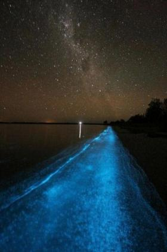
Gippsland Lake Bioluminescence
Australian Lake set aglow by Noctiluca ScintillansThe conditions were rare, and they were perfect. Starting with a series of bush fires in 2006, followed by torrential rains in 2007, by 2008 massive amounts of ash and nitrogen rich soul was washed into the Gippsand Lake in Southeast Australia. While this would have normally resulted in a bloom of bacteria, because of the scale of the fires and the flood, that year something unusual happened.
A massive algae bloom of Noctiluca Scintillans, visible as murky red patches during the day, appeared replacing the more usual normal green Synechococcus. But the Noctiluca Scintillans had another trick up its sleeve: at night it glowed.
In the summer of 2008 and 2009 the shores of the Gippsland Lakes glowed a faint blue at night as the bacteria were agitated by movement in the water. Anyone taking a skinny dip at night would find the water glowing spectacularly around them.
The lakes have since lessoned in bioluminescence - a good thing as the bacteria blooms are harmful to other life in the lake - and it may be a very long time until a bioluminescent event of that scale happens again on the lake.
However, those who are willing to head out for a midnight swim in Gippsland can still often catch a faint glowing about them during the summer months of the year.
Read more about Gippsland Lake Bioluminescence on Atlas Obscura...
Category: Bioluminescent Spots
Location: Boorook, Australia
Edited by: serflac, Rachel, Dylan
Fri, 16 Nov 2012 09:04:00 -0600
Boiling Lake
Boiling Lake
Boiling LakeThis mountaintop lake bubbles and steams in a perpetual boil, thanks to its direct link to the Earth's molten coreThere’s nothing quite like a secluded lake. Passing through a thicket of trees or over a rugged trail, and suddenly catching a glimpse of that clear blue water, its surface sparkling like glass in the hot sun, and sipping the cool, refreshing water from the mountain springs that feed it. Or, on a particularly hot summer day, jumping headlong into it for a jolt of cold refreshment from head to toe.
A mountain lake like that is universal in its appeal, and Dominica is no different. Except in one spot.
In one particularly odd basin, pooled high atop Watt Mountain in Morne Trois Pitons National Park, the water simply isn’t that refreshing. In fact, it’s boiling hot. And while ‘boiling hot’ is a common phrase used for hyperbole, visitors should not test the veracity of this claim -- drinking or bathing in this water will result in death, or at least severe burns.
Not that most visitors would be tempted to do such a thing. A thick cloud of balmy steam emanates from and surrounds the menacing lake, leaving no question as to how hot the water really is. But if that alone isn’t convincing enough, the swirling, bubbling maelstrom of churning water at the lake’s center confirm without a doubt that the water has been brought to a boil.
Enchanted by evil magic as this body of water may seem, the phenomenon is actually quite simple, though rare. The bowl of rocky clay that forms this lake is not your average scoop in the ground -- instead, this lake has a direct line to the molten subsurface of the Earth, with vents pumping scalding steam and gasses into the water, heating it to an instant boil.
But magic or no magic, this perpetually boiling-then-evaporating body of water does seem to defy the laws of physics -- or at least the laws of logic -- and creating a strange and bemusing site at the top of this misty mountain.Read more about Boiling Lake on Atlas Obscura...Category: Natural Wonders, Watery Wonders, Geological OdditiesLocation: Edited by: Mark_Casey, Rachel
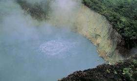
Boiling Lake
This mountaintop lake bubbles and steams in a perpetual boil, thanks to its direct link to the Earth's molten coreThere’s nothing quite like a secluded lake. Passing through a thicket of trees or over a rugged trail, and suddenly catching a glimpse of that clear blue water, its surface sparkling like glass in the hot sun, and sipping the cool, refreshing water from the mountain springs that feed it. Or, on a particularly hot summer day, jumping headlong into it for a jolt of cold refreshment from head to toe.
A mountain lake like that is universal in its appeal, and Dominica is no different. Except in one spot.
In one particularly odd basin, pooled high atop Watt Mountain in Morne Trois Pitons National Park, the water simply isn’t that refreshing. In fact, it’s boiling hot. And while ‘boiling hot’ is a common phrase used for hyperbole, visitors should not test the veracity of this claim -- drinking or bathing in this water will result in death, or at least severe burns.
Not that most visitors would be tempted to do such a thing. A thick cloud of balmy steam emanates from and surrounds the menacing lake, leaving no question as to how hot the water really is. But if that alone isn’t convincing enough, the swirling, bubbling maelstrom of churning water at the lake’s center confirm without a doubt that the water has been brought to a boil.
Enchanted by evil magic as this body of water may seem, the phenomenon is actually quite simple, though rare. The bowl of rocky clay that forms this lake is not your average scoop in the ground -- instead, this lake has a direct line to the molten subsurface of the Earth, with vents pumping scalding steam and gasses into the water, heating it to an instant boil.
But magic or no magic, this perpetually boiling-then-evaporating body of water does seem to defy the laws of physics -- or at least the laws of logic -- and creating a strange and bemusing site at the top of this misty mountain.
Read more about Boiling Lake on Atlas Obscura...
Category: Natural Wonders, Watery Wonders, Geological Oddities
Location:
Edited by: Mark_Casey, Rachel
Fri, 16 Nov 2012 09:01:00 -0600
Undersea Brine Lake
Undersea Brine Lake
Undersea Brine LakeA lake at the bottom of the oceanImagine discovering a lake whose waves gently lap at its shores, leaving high water marks and ripples in the nearby sand. Now imagine the very same scene, located more than 650 feet below the surface of the Gulf of Mexico.
Scientists plumbing the ocean’s depths just off the Yucatan Peninsula stumbled upon just such an unfathomable sight when, in otherwise dark waters, their submersible’s lights were reflected by the bright white, mirrored surface of the undersea lake.
Composed of super-concentrated, denser-than-water brine (not to be confused with the ocean’s run-of-the-mill ‘briny blue’ seas), these ‘brine pools’ are thought to form as the byproduct of salt tectonic shifts dating back to the Jurassic period. Due to lethal levels of hypersalinity, only bacteria and other microorganisms are able to live within these underwater lakes. Mollusks and crustaceans are indigenous to their shores, though crabs and urchins placed in the pool during scientific testing were, effectively, pickled.
Those who have witnessed the pools first-hand report that, “[they’re] so dense that when you come down onto it in a submarine, you bump. You float. Little ripples spread out. It's a very surreal experience." Indeed.Read more about Undersea Brine Lake on Atlas Obscura...Category: Watery Wonders, Wonders of SaltLocation: Edited by: littlebrumble, Dylan, Rachel
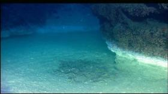
Undersea Brine Lake
A lake at the bottom of the oceanImagine discovering a lake whose waves gently lap at its shores, leaving high water marks and ripples in the nearby sand. Now imagine the very same scene, located more than 650 feet below the surface of the Gulf of Mexico.
Scientists plumbing the ocean’s depths just off the Yucatan Peninsula stumbled upon just such an unfathomable sight when, in otherwise dark waters, their submersible’s lights were reflected by the bright white, mirrored surface of the undersea lake.
Composed of super-concentrated, denser-than-water brine (not to be confused with the ocean’s run-of-the-mill ‘briny blue’ seas), these ‘brine pools’ are thought to form as the byproduct of salt tectonic shifts dating back to the Jurassic period. Due to lethal levels of hypersalinity, only bacteria and other microorganisms are able to live within these underwater lakes. Mollusks and crustaceans are indigenous to their shores, though crabs and urchins placed in the pool during scientific testing were, effectively, pickled.
Those who have witnessed the pools first-hand report that, “[they’re] so dense that when you come down onto it in a submarine, you bump. You float. Little ripples spread out. It's a very surreal experience." Indeed.
Read more about Undersea Brine Lake on Atlas Obscura...
Category: Watery Wonders, Wonders of Salt
Location:
Edited by: littlebrumble, Dylan, Rachel
Fri, 16 Nov 2012 08:57:00 -0600
Lake Retba
Lake Retba
Lake RetbaA lake that looks like blushing pink lemonade is deceptively saltyEvoking visions of Candyland fantasies, the princess pink waters of Lake Retba are deceptively inviting. White beaches and sandy dunes call to tourists, film crews and even play host to the finish line of the Dakar Rally. As tempting as it appears, despite its popularity and the fact that you will often see people wading through the pink waves, Lake Retba is not the friendliest of waters, and that white sand is mostly salt.
Also known as “Lac Rose”, this unique lake lies just north of the Cap Vert Peninsula of Senegal, northeast of Dakar. Its salt content rivals that of the Dead Sea, which makes for increased human buoyancy, as well as a busy salt industry. Salt collectors arrive daily at the lake, covered in shea butter to protect their skin from the harsh salinity, and spend 7 hours a day collecting the precious mineral from the lakebed.
The water in Lake Retba constantly changes hues, but the most stunning pink shade appears during the dry season. The salt-loving micro-organism Dunaliella salina combined with high a mineral concentration and the intensity of the summer sun are the producers of the cotton candy-colored water. With the salt levels reaching up to 40%, the lake can sometimes take a more sinister shade, appearing blood red, a much less comforting place for your imagination to go when gazing out upon the surreal view.Read more about Lake Retba on Atlas Obscura...Category: Natural Wonders, Watery Wonders, Wonders of SaltLocation: Lac Retba, SenegalEdited by: Rachel
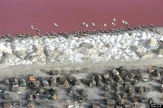
Lake Retba
A lake that looks like blushing pink lemonade is deceptively saltyEvoking visions of Candyland fantasies, the princess pink waters of Lake Retba are deceptively inviting. White beaches and sandy dunes call to tourists, film crews and even play host to the finish line of the Dakar Rally. As tempting as it appears, despite its popularity and the fact that you will often see people wading through the pink waves, Lake Retba is not the friendliest of waters, and that white sand is mostly salt.
Also known as “Lac Rose”, this unique lake lies just north of the Cap Vert Peninsula of Senegal, northeast of Dakar. Its salt content rivals that of the Dead Sea, which makes for increased human buoyancy, as well as a busy salt industry. Salt collectors arrive daily at the lake, covered in shea butter to protect their skin from the harsh salinity, and spend 7 hours a day collecting the precious mineral from the lakebed.
The water in Lake Retba constantly changes hues, but the most stunning pink shade appears during the dry season. The salt-loving micro-organism Dunaliella salina combined with high a mineral concentration and the intensity of the summer sun are the producers of the cotton candy-colored water. With the salt levels reaching up to 40%, the lake can sometimes take a more sinister shade, appearing blood red, a much less comforting place for your imagination to go when gazing out upon the surreal view.
Read more about Lake Retba on Atlas Obscura...
Category: Natural Wonders, Watery Wonders, Wonders of Salt
Location: Lac Retba, Senegal
Edited by: Rachel
Fri, 16 Nov 2012 08:55:00 -0600
Mono Lake
Mono Lake
Mono LakeAqueducts have dramatically changed this old lake, now home to tufa towers and its very own species of tiny brine shrimpMono Lake is believed to have formed 760,000 years ago, making it one of the oldest lakes in North America. Researchers estimate that at the time of the last ice age, the lake was 900 feet deep and surrounded by large volcanoes. Islands in the lake were known as important nesting sites, and it is believed that 85% of California Gulls started their life there. All that changed, however, in 1941, when the Los Angeles Department of Water and Power built an aqueduct and began diverting the lake's water 300 miles south.
So much water was diverted that the rate of evaporation far exceeded the inflow. Subsequently, the lake's surface level decreased to half its depth while the saline levels doubled. By 1962, the lake had lost almost 25 vertical feet and its ecosystems began to crumble. The nesting beds became accessible to predators, mostly coyotes, and the famous California gulls were forced to abandon the site.
As the surface level dropped, it also exposed alkaline sands and odd-shaped tufa towers that had laid hidden for years. The tufa towers, which have since made the lake popular among tourists, are calcium-carbonate structures that form from underground springs. The calcium and carbonate mix to form limestone and builds up over time to create the 30-foot tall spire structures that can be seen today.
The lake was almost left to ruin until 1978, when David Gaines assembled the Mono Lake Committee and began spreading awareness about the urgent state of the area. A decade later, Gaines and his colleague, Don Oberlin, were killed on site in a winter automobile accident. Despite this tragedy, the committee has continued to fight to preserve the area, now known as an important ecological and geological site for researchers.
Though the lake's hypersalinity and alkalinity levels make it impossible for fish to survive there, the area is home to a species of brine shrimp, Artemia monica, found nowhere else in the world. The brine shrimp -- roughly the size of a thumbnail -- lay dormant during winter months, but 4-6 trillion brine shrimp surface by spring time and early summer.
The tiny species of brine shrimp, as well as alkali flies, feed off even tinier species of microscopic, single-celled planktonic algae. The green algae reproduces rapidly during the winter months, and by March the lake is said to look "as green as pea soup." Like any food chain, however, both shrimp and flies alike become a delicacy to millions of birds that flock to the area year round. Every fall, 1.5 million Eared Grebes stop to feast at Mono Lake during their long migrations.
Although the landscape has dramatically changed -- and though the water levels still remain below the historic record -- Mono Lake has one of the most productive ecosystems in the world and is a geological hotbed for researchers. Located in the Mono Basin, the area is the center of much seismic activity, and is flanked by volcanic rock formations that are 1-3 million years old. Such formations include the Mono Craters, 24 domes of explosive rhyolite that forms the youngest volcanic chain in North America.
Today, the Mono Lake Committee suspects that it will take roughly 20 years before the water will return to 6,392 feet above sea level, the Water Board-ordered stabilization level. Even then, the salt levels will be twice as concentrated as the ocean.Read more about Mono Lake on Atlas Obscura...Category: Natural Wonders, Watery Wonders, Martian Landscapes, Geological Oddities, Fascinating Fauna, Wonders of SaltLocation: Edited by: anhie, Deryn, Rachel
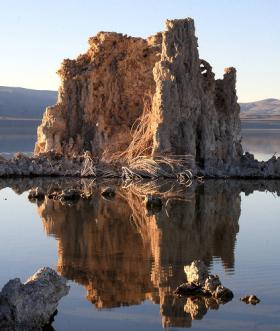
Mono Lake
Aqueducts have dramatically changed this old lake, now home to tufa towers and its very own species of tiny brine shrimpMono Lake is believed to have formed 760,000 years ago, making it one of the oldest lakes in North America. Researchers estimate that at the time of the last ice age, the lake was 900 feet deep and surrounded by large volcanoes. Islands in the lake were known as important nesting sites, and it is believed that 85% of California Gulls started their life there. All that changed, however, in 1941, when the Los Angeles Department of Water and Power built an aqueduct and began diverting the lake's water 300 miles south.
So much water was diverted that the rate of evaporation far exceeded the inflow. Subsequently, the lake's surface level decreased to half its depth while the saline levels doubled. By 1962, the lake had lost almost 25 vertical feet and its ecosystems began to crumble. The nesting beds became accessible to predators, mostly coyotes, and the famous California gulls were forced to abandon the site.
As the surface level dropped, it also exposed alkaline sands and odd-shaped tufa towers that had laid hidden for years. The tufa towers, which have since made the lake popular among tourists, are calcium-carbonate structures that form from underground springs. The calcium and carbonate mix to form limestone and builds up over time to create the 30-foot tall spire structures that can be seen today.
The lake was almost left to ruin until 1978, when David Gaines assembled the Mono Lake Committee and began spreading awareness about the urgent state of the area. A decade later, Gaines and his colleague, Don Oberlin, were killed on site in a winter automobile accident. Despite this tragedy, the committee has continued to fight to preserve the area, now known as an important ecological and geological site for researchers.
Though the lake's hypersalinity and alkalinity levels make it impossible for fish to survive there, the area is home to a species of brine shrimp, Artemia monica, found nowhere else in the world. The brine shrimp -- roughly the size of a thumbnail -- lay dormant during winter months, but 4-6 trillion brine shrimp surface by spring time and early summer.
The tiny species of brine shrimp, as well as alkali flies, feed off even tinier species of microscopic, single-celled planktonic algae. The green algae reproduces rapidly during the winter months, and by March the lake is said to look "as green as pea soup." Like any food chain, however, both shrimp and flies alike become a delicacy to millions of birds that flock to the area year round. Every fall, 1.5 million Eared Grebes stop to feast at Mono Lake during their long migrations.
Although the landscape has dramatically changed -- and though the water levels still remain below the historic record -- Mono Lake has one of the most productive ecosystems in the world and is a geological hotbed for researchers. Located in the Mono Basin, the area is the center of much seismic activity, and is flanked by volcanic rock formations that are 1-3 million years old. Such formations include the Mono Craters, 24 domes of explosive rhyolite that forms the youngest volcanic chain in North America.
Today, the Mono Lake Committee suspects that it will take roughly 20 years before the water will return to 6,392 feet above sea level, the Water Board-ordered stabilization level. Even then, the salt levels will be twice as concentrated as the ocean.
Read more about Mono Lake on Atlas Obscura...
Category: Natural Wonders, Watery Wonders, Martian Landscapes, Geological Oddities, Fascinating Fauna, Wonders of Salt
Location:
Edited by: anhie, Deryn, Rachel
Mon, 19 Nov 2012 09:59:00 -0600
The Winchester Mystery House
The Winchester Mystery House
The Winchester Mystery HouseA peculiar mansion built by the troubled Winchester widowA bizarre mansion built by Sarah Winchester, the heir to the rifle fortune, this 160-room estate abounds with architectural oddities. Originally seven stories, now only four the 1906 earthquake, the mansion was built by Mrs. Winchester after the untimely deaths of her husband and child. She said she was also haunted by the spirits of those killed by the Winchester rifle. Mrs. Winchester had her team of carpenters work ceaselessly for 38 years, building peculiar items such as stairs that led to nowhere and rooms that trap you inside them. All were built in an effort by Mrs. Winchester to keep her spirit tormentors at bay. A particularly odd delight is a cabinet that when opened extends through thirty rooms of the house.
A Mansion Tour, Garden Tour and "Behind the Scenes" tour are all available. (Behind the scenes tour not available for children under 9.) There are also Flashlight Tours on special dates. The Winchester Antiques Products Museum and the Winchester Firearms Museum are also housed nearby.Read more about The Winchester Mystery House on Atlas Obscura...Category: Follies and Grottoes, Outsider ArchitectureLocation: Edited by: Dylan, Henry, pierrejacques, Rachel
The Winchester Mystery House
A peculiar mansion built by the troubled Winchester widowA bizarre mansion built by Sarah Winchester, the heir to the rifle fortune, this 160-room estate abounds with architectural oddities. Originally seven stories, now only four the 1906 earthquake, the mansion was built by Mrs. Winchester after the untimely deaths of her husband and child. She said she was also haunted by the spirits of those killed by the Winchester rifle. Mrs. Winchester had her team of carpenters work ceaselessly for 38 years, building peculiar items such as stairs that led to nowhere and rooms that trap you inside them. All were built in an effort by Mrs. Winchester to keep her spirit tormentors at bay. A particularly odd delight is a cabinet that when opened extends through thirty rooms of the house.
A Mansion Tour, Garden Tour and "Behind the Scenes" tour are all available. (Behind the scenes tour not available for children under 9.) There are also Flashlight Tours on special dates. The Winchester Antiques Products Museum and the Winchester Firearms Museum are also housed nearby.
Read more about The Winchester Mystery House on Atlas Obscura...
Category: Follies and Grottoes, Outsider Architecture
Location:
Edited by: Dylan, Henry, pierrejacques, Rachel
Mon, 19 Nov 2012 09:48:00 -0600
The atomium
The atomium
The atomiumClimb inside an iron crystal magnified 165 billion times its normal sizeIn 1958 the Atomium was built for the Brussels Worlds Fair and never intended to be a permanent part of the Brussels landscape, but like the Eiffel tower for the French, once the fair was over the Belgians wanted to keep the giant structure.
Essentially the Atomium is a 335 foot tall giant iron crystal, replicated in shiny steel. It is formed by nine steel spheres arranged in the the shape that iron atoms take in their delta and alpha allotropes. (In irons gamma allotrope, there are extra atoms at the center of each face of the cube.) The Atomium is magnified 165 billion times the normal size of an iron crystal.
Designed by André Waterkeyn, (the director of a federation of metallurgical companies and not a sculptor by trade) one of the original ideas had been to build an upside down version of the Eiffel Tower, but in keeping with a 50s atomic age theme, they built the Atomium.
The Atomium was recently renovated and all but three of the steel spheres are available to enter and contain everything from an exhibition space, to a restaurant, to a place for Belgian school kids to have sleepovers.
Nearby the Atomium is Mini-Europe a Theme park featuring miniature replicas of European monumentsRead more about The atomium on Atlas Obscura...Category: Unusual Monuments, Strange Statues, Inspired Inventions, Retro-Tech, Architectural OdditiesLocation: Edited by: Dylan, Facebook_100001510821435, Rachel
The atomium
Climb inside an iron crystal magnified 165 billion times its normal sizeIn 1958 the Atomium was built for the Brussels Worlds Fair and never intended to be a permanent part of the Brussels landscape, but like the Eiffel tower for the French, once the fair was over the Belgians wanted to keep the giant structure.
Essentially the Atomium is a 335 foot tall giant iron crystal, replicated in shiny steel. It is formed by nine steel spheres arranged in the the shape that iron atoms take in their delta and alpha allotropes. (In irons gamma allotrope, there are extra atoms at the center of each face of the cube.) The Atomium is magnified 165 billion times the normal size of an iron crystal.
Designed by André Waterkeyn, (the director of a federation of metallurgical companies and not a sculptor by trade) one of the original ideas had been to build an upside down version of the Eiffel Tower, but in keeping with a 50s atomic age theme, they built the Atomium.
The Atomium was recently renovated and all but three of the steel spheres are available to enter and contain everything from an exhibition space, to a restaurant, to a place for Belgian school kids to have sleepovers.
Nearby the Atomium is Mini-Europe a Theme park featuring miniature replicas of European monuments
Read more about The atomium on Atlas Obscura...
Category: Unusual Monuments, Strange Statues, Inspired Inventions, Retro-Tech, Architectural Oddities
Location:
Edited by: Dylan, Facebook_100001510821435, Rachel
Mon, 19 Nov 2012 09:39:00 -0600
Cano's Castle
Cano's Castle
Cano's CastleA number of gleaming self-built towers made from beer cans and other refuse.Built by Donald "Cano" Espinoza, a Native American Vietnam vet, whose main influences for the Castle are "Vitamin Mary Jane" and Jesus, it is a wonder to behold. Built largely out of beer cans and other metal refuse, for Espinoza it serves as a thanks for having his life spared during the war. Cano's castle is actually four separate structures. "The king", "the queen", "the palace" and "the rook". The four story "king" house, covered in beer cans and hubcaps gleaming in the sunlight, is by far the crowning architectural achievement.Read more about Cano's Castle on Atlas Obscura...Category: Outsider Art, Architectural Oddities, Eccentric Homes, Outsider ArchitectureLocation: Edited by: Dylan, CPilgrim, Rachel
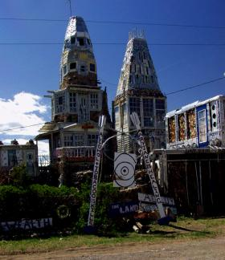
Cano's Castle
A number of gleaming self-built towers made from beer cans and other refuse.Built by Donald "Cano" Espinoza, a Native American Vietnam vet, whose main influences for the Castle are "Vitamin Mary Jane" and Jesus, it is a wonder to behold. Built largely out of beer cans and other metal refuse, for Espinoza it serves as a thanks for having his life spared during the war. Cano's castle is actually four separate structures. "The king", "the queen", "the palace" and "the rook". The four story "king" house, covered in beer cans and hubcaps gleaming in the sunlight, is by far the crowning architectural achievement.
Read more about Cano's Castle on Atlas Obscura...
Category: Outsider Art, Architectural Oddities, Eccentric Homes, Outsider Architecture
Location:
Edited by: Dylan, CPilgrim, Rachel
Mon, 19 Nov 2012 09:27:00 -0600
Big Duck
Big Duck
Big DuckA former poultry store that looks like a giant duck and is one of the "seven wonders" of Long IslandThis giant duck-shaped poultry store was built in 1931 as a ploy by an enterprising farmer, Martin Maurer, to sell more ducks and duck eggs. Not only did it succeed in selling more waterfowl, but it has become one of Long Island's leading landmarks. The duck is now located in a park and has a gift shop inside.
There are several interesting elements in the duck's history. The duck's eyes give away its age and are in fact headlights of a Model T Ford. The structure was also featured in an Atlas Cement catalog although the majority of the duck was built with a different type of cement. The duck has been moved several times, first to be nearer to the owner's duck farm and again by Suffolk County, before finally returning to Flanders.
The duck is also responsible for an interesting bit of architectural lingo: Robert Venturi coined the term "duck" to describe a building that conforms to its purpose, in deference to the Big Duck. It was named one of the seven Wonders of Long Island by a local radio station.Read more about Big Duck on Atlas Obscura...Category: Eccentric Homes, Outsider ArchitectureLocation: Edited by: greg, Dylan, Henry, AllisonEng, Rachel
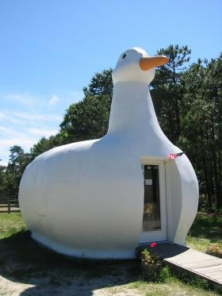
Big Duck
A former poultry store that looks like a giant duck and is one of the "seven wonders" of Long IslandThis giant duck-shaped poultry store was built in 1931 as a ploy by an enterprising farmer, Martin Maurer, to sell more ducks and duck eggs. Not only did it succeed in selling more waterfowl, but it has become one of Long Island's leading landmarks. The duck is now located in a park and has a gift shop inside.
There are several interesting elements in the duck's history. The duck's eyes give away its age and are in fact headlights of a Model T Ford. The structure was also featured in an Atlas Cement catalog although the majority of the duck was built with a different type of cement. The duck has been moved several times, first to be nearer to the owner's duck farm and again by Suffolk County, before finally returning to Flanders.
The duck is also responsible for an interesting bit of architectural lingo: Robert Venturi coined the term "duck" to describe a building that conforms to its purpose, in deference to the Big Duck. It was named one of the seven Wonders of Long Island by a local radio station.
Read more about Big Duck on Atlas Obscura...
Category: Eccentric Homes, Outsider Architecture
Location:
Edited by: greg, Dylan, Henry, AllisonEng, Rachel
Mon, 19 Nov 2012 09:11:00 -0600
Great Isaac Cay
Great Isaac Cay
Great Isaac Cay Post-apocolyptic paradise in the form of a haunted lighthouse left to crumble into the AtlanticErected in the 1850s to prevent the Bermuda Triangle from disappearing merchant ships, the 152-foot tall Great Isaac Lighthouse has become more of a participant in the area's mysteries than protector.
The cay itself is a giant coral head rising a few feet out of the area’s shallow, dangerous reefs. Razor sharp terrain makes the land inhospitable, resembling hollowed, jagged bones instead of rock or earth. Nineteenth century lore has it that a ship wrecked in Great Isaac Cay's waters, killing everyone aboard except one young infant. Locals claim that the infant's mother (known as the Grey Lady) can still be seen roaming the island, and her wails of sorrow can be heard on full moons.
As recently as 1969, the barren island had been occupied by human keepers, though they mysteriously disappeared. Their bodies were never found. After their disappearance, replacement lighthouse keepers weren’t exactly lining up for the position. The compound’s buildings have been left to crumble, and the Great Isaac Light was automated, shining a white beam every 15 seconds to sailors up to 23 nautical miles away.
Though the cay’s grounds are open to the public, the bottom few stairs in the tower are missing and the storage bunkers and buildings are locked. Exploring is expected and part of the fun, though falling on the rocks or shimmying up the lighthouse’s rusty staircase are both real possibilities, and may earn you a fresh tetanus shot. Moderate agility is required to make landfall.Read more about Great Isaac Cay on Atlas Obscura...Category: Watery Wonders, Anomalous Islands, Incredible RuinsLocation: Edited by: littlebrumble, Annetta, AllisonEng, scamb66, Rachel
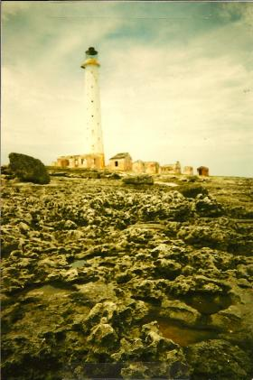
Great Isaac Cay
Post-apocolyptic paradise in the form of a haunted lighthouse left to crumble into the AtlanticErected in the 1850s to prevent the Bermuda Triangle from disappearing merchant ships, the 152-foot tall Great Isaac Lighthouse has become more of a participant in the area's mysteries than protector.
The cay itself is a giant coral head rising a few feet out of the area’s shallow, dangerous reefs. Razor sharp terrain makes the land inhospitable, resembling hollowed, jagged bones instead of rock or earth. Nineteenth century lore has it that a ship wrecked in Great Isaac Cay's waters, killing everyone aboard except one young infant. Locals claim that the infant's mother (known as the Grey Lady) can still be seen roaming the island, and her wails of sorrow can be heard on full moons.
As recently as 1969, the barren island had been occupied by human keepers, though they mysteriously disappeared. Their bodies were never found. After their disappearance, replacement lighthouse keepers weren’t exactly lining up for the position. The compound’s buildings have been left to crumble, and the Great Isaac Light was automated, shining a white beam every 15 seconds to sailors up to 23 nautical miles away.
Though the cay’s grounds are open to the public, the bottom few stairs in the tower are missing and the storage bunkers and buildings are locked. Exploring is expected and part of the fun, though falling on the rocks or shimmying up the lighthouse’s rusty staircase are both real possibilities, and may earn you a fresh tetanus shot. Moderate agility is required to make landfall.
Read more about Great Isaac Cay on Atlas Obscura...
Category: Watery Wonders, Anomalous Islands, Incredible Ruins
Location:
Edited by: littlebrumble, Annetta, AllisonEng, scamb66, Rachel
Fri, 16 Nov 2012 09:04:00 -0600
Kaindy Lake
Kaindy Lake
Kaindy LakeSubmerged trees jut ghost-like out of an idyllic turquoise mountain lakeKaindy Lake is an idyllic mountain lake in Kazakhstan’s portion of the Tian Shan Mountains, close to the country’s largest city, Almaty. The lake was formed after an earthquake in 1911, which caused a major landslide, effectively creating a natural dam. Successively, rainwater filled the valley and created the lake.
The lake is famous for the number of dead and bleached spruce trees that stick out of the water – remnants of the trees that were flooded when the lake was formed. The trees, together with the improbable turquoise water of the lake, make an incredibly scenic sight. Underwater, the imagery is even more stunning, as the trees have not decomposed and create the surreal vision of an underwater forest.
Surprisingly, the lake sees few visitors, partly because Kaindy Lake is overshadowed by the more famous Bolshoe Almatinskoe Lake and the Kolsay Lakes, all of which are close by, but far easier to reach from Almaty. Thus, despite its proximity to a city with a population of more than one million, the lake retains a peaceful atmosphere.Read more about Kaindy Lake on Atlas Obscura...Category: Natural Wonders, Watery Wonders, Geological OdditiesLocation: Mogila Malay, KazakhstanEdited by: Tawsam, Rachel
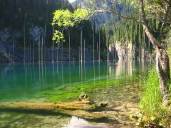
Kaindy Lake
Submerged trees jut ghost-like out of an idyllic turquoise mountain lakeKaindy Lake is an idyllic mountain lake in Kazakhstan’s portion of the Tian Shan Mountains, close to the country’s largest city, Almaty. The lake was formed after an earthquake in 1911, which caused a major landslide, effectively creating a natural dam. Successively, rainwater filled the valley and created the lake.
The lake is famous for the number of dead and bleached spruce trees that stick out of the water – remnants of the trees that were flooded when the lake was formed. The trees, together with the improbable turquoise water of the lake, make an incredibly scenic sight. Underwater, the imagery is even more stunning, as the trees have not decomposed and create the surreal vision of an underwater forest.
Surprisingly, the lake sees few visitors, partly because Kaindy Lake is overshadowed by the more famous Bolshoe Almatinskoe Lake and the Kolsay Lakes, all of which are close by, but far easier to reach from Almaty. Thus, despite its proximity to a city with a population of more than one million, the lake retains a peaceful atmosphere.
Read more about Kaindy Lake on Atlas Obscura...
Category: Natural Wonders, Watery Wonders, Geological Oddities
Location: Mogila Malay, Kazakhstan
Edited by: Tawsam, Rachel
Fri, 16 Nov 2012 09:02:00 -0600
Hanging Lake
Hanging Lake
Hanging LakeCrystal clear lake with a shoreline of travertine located in a Colorado canyon1,000 feet up the steep walls of Glenwood Canyon there hides away a basin full of water the color of Paris Green, waterfalls roaring near the fragile shoreline of travertine, the bottom of the lake fully visible through crystal clear waters.
Discovered by a gold hunting prospector, Hanging Lake was a private homestead and family retreat until falling into the hands of Glenwood Springs in 1910. Protected by the White River Forest Service, this is a popular stop for those willing to take a short but steep hike to see the trout-filled, glacially formed watery haven seemingly suspended from the side of the canyon.Read more about Hanging Lake on Atlas Obscura...Category: Natural Wonders, Watery WondersLocation: Edited by: michaelmecseri, Rachel
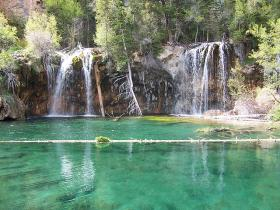
Hanging Lake
Crystal clear lake with a shoreline of travertine located in a Colorado canyon1,000 feet up the steep walls of Glenwood Canyon there hides away a basin full of water the color of Paris Green, waterfalls roaring near the fragile shoreline of travertine, the bottom of the lake fully visible through crystal clear waters.
Discovered by a gold hunting prospector, Hanging Lake was a private homestead and family retreat until falling into the hands of Glenwood Springs in 1910. Protected by the White River Forest Service, this is a popular stop for those willing to take a short but steep hike to see the trout-filled, glacially formed watery haven seemingly suspended from the side of the canyon.
Read more about Hanging Lake on Atlas Obscura...
Category: Natural Wonders, Watery Wonders
Location:
Edited by: michaelmecseri, Rachel
Fri, 16 Nov 2012 08:58:00 -0600
Gruta Do Lago Azul: The Blue Lake Grotto
Gruta Do Lago Azul: The Blue Lake Grotto
Gruta Do Lago Azul: The Blue Lake GrottoPart of one of the largest flooded cavities on the planet, and littered with prehistoric animal bones.
It is possible that no human had set foot in this cave until its discovery in 1924 by one of the local Terena Indians who, as far as it is known, had not been aware of the beautiful cave's existence. The cave is a part of one of the largest flooded cavities on the planet.
Called the Gruta Do Lago Azul, or the Blue Lake Grotto, the large cave is filled with a pool of astonishingly clear blue water. Thought to be over 200 feet deep, the water turns a particularly beautiful blue when sunlight shines through a hole in the ceiling of the cave, and makes the water shimmer in the light. It is believed that the lake is fed by an underground river yet to be located.
In 1992, a Franco-Brazilian expedition went cave diving and found a surprise: thousands of prehistoric animal bones - giant mammals from the Pleistocene era -- lay on the bottom of the grotto. From saber tooth tigers to giant sloths, the underwater site is tremendously rich in giant mammal fossils.Read more about Gruta Do Lago Azul: The Blue Lake Grotto on Atlas Obscura...Category: Natural Wonders, Watery Wonders, Curious CavesLocation: Edited by: Dylan, Annetta, gabeschwartz, Rachel
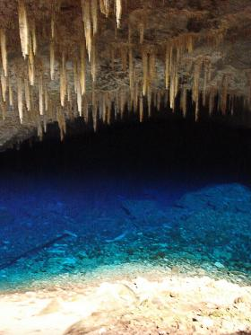
Gruta Do Lago Azul: The Blue Lake Grotto
Part of one of the largest flooded cavities on the planet, and littered with prehistoric animal bones.
It is possible that no human had set foot in this cave until its discovery in 1924 by one of the local Terena Indians who, as far as it is known, had not been aware of the beautiful cave's existence. The cave is a part of one of the largest flooded cavities on the planet.
Called the Gruta Do Lago Azul, or the Blue Lake Grotto, the large cave is filled with a pool of astonishingly clear blue water. Thought to be over 200 feet deep, the water turns a particularly beautiful blue when sunlight shines through a hole in the ceiling of the cave, and makes the water shimmer in the light. It is believed that the lake is fed by an underground river yet to be located.
In 1992, a Franco-Brazilian expedition went cave diving and found a surprise: thousands of prehistoric animal bones - giant mammals from the Pleistocene era -- lay on the bottom of the grotto. From saber tooth tigers to giant sloths, the underwater site is tremendously rich in giant mammal fossils.
Read more about Gruta Do Lago Azul: The Blue Lake Grotto on Atlas Obscura...
Category: Natural Wonders, Watery Wonders, Curious Caves
Location:
Edited by: Dylan, Annetta, gabeschwartz, Rachel
Fri, 16 Nov 2012 08:56:00 -0600
Pitch Lake
Pitch Lake
Pitch LakeThis peculiar lake of pitch is so thick and viscous that one can walk on its surface.Sometimes, it feels soft and spongy, like the top of a gigantic eraser. At other points, it's more like quicksand. And dotted throughout are breaks in its continuity, revealing water below – not unlike a lake frozen for winter.
It's the surface of Pitch Lake, which is exactly what it sounds like: A lake "made of" pitch. And in most places, it's nearly solid, allowing fascinated visitors to walk along its strange, often unsettling surface.
A more accurate description is that Pitch Lake is a basin in the island nation of Trinidad and Tobago that collects both water and pitch, resulting in a somewhat unreal mixture of the two, at times as thin as regular lakewater, and at others as hard as a rock. Debris such as boulders, fallen trees, and refuse often get caught in the sticky surface, resulting in impromptu works of art as well as warning signs of the lake's actual danger, as the pitch hardens around the object and effectively turns it to stone.
This doesn't stop daring travelers from walking along the surface of the lake, jabbing sticks and rocks into the clingy goo that forms the more stable areas, or even taking a plunge in the open "pools" of water that often form at crevices in the semi-continuous pitch. Long known by locals to be a strange place, Pitch Lake has picked up a bit of a reputation as a tourist attraction, with off-the-beaten-path travelers coming to examine one of the strangest lakes on the planet.Read more about Pitch Lake on Atlas Obscura...Category: Natural Wonders, Watery Wonders, Martian Landscapes, Geological Oddities, Intriguing EnvironsLocation: Edited by: Mark_Casey, Rachel
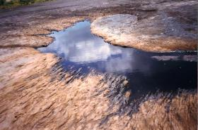
Pitch Lake
This peculiar lake of pitch is so thick and viscous that one can walk on its surface.Sometimes, it feels soft and spongy, like the top of a gigantic eraser. At other points, it's more like quicksand. And dotted throughout are breaks in its continuity, revealing water below – not unlike a lake frozen for winter.
It's the surface of Pitch Lake, which is exactly what it sounds like: A lake "made of" pitch. And in most places, it's nearly solid, allowing fascinated visitors to walk along its strange, often unsettling surface.
A more accurate description is that Pitch Lake is a basin in the island nation of Trinidad and Tobago that collects both water and pitch, resulting in a somewhat unreal mixture of the two, at times as thin as regular lakewater, and at others as hard as a rock. Debris such as boulders, fallen trees, and refuse often get caught in the sticky surface, resulting in impromptu works of art as well as warning signs of the lake's actual danger, as the pitch hardens around the object and effectively turns it to stone.
This doesn't stop daring travelers from walking along the surface of the lake, jabbing sticks and rocks into the clingy goo that forms the more stable areas, or even taking a plunge in the open "pools" of water that often form at crevices in the semi-continuous pitch. Long known by locals to be a strange place, Pitch Lake has picked up a bit of a reputation as a tourist attraction, with off-the-beaten-path travelers coming to examine one of the strangest lakes on the planet.
Read more about Pitch Lake on Atlas Obscura...
Category: Natural Wonders, Watery Wonders, Martian Landscapes, Geological Oddities, Intriguing Environs
Location:
Edited by: Mark_Casey, Rachel
Fri, 16 Nov 2012 08:53:00 -0600
Band-e Amir Lakes
Band-e Amir Lakes
Band-e Amir LakesSplashes of blue in an otherwise monotonous lunar landscapeThe lakes of Band-e Amir are an incredibly stunning sight. Six deep blue lakes suddenly appear like sparkling jewels in the middle of the barren grey wasteland of Central Afghanistan that stretches as far the eye can see. The lakes’ waters are composed of a high mineral content, which is responsible for the deep blue colour of the lakes.
Travertine walls between and around the lakes have created natural dams, that store the rainwater, which flows from the cracks and fissures of the surrounding rocks. Around the shore of the lake Band-e Haibat the travertine walls reach a height of twelve meters, creating an otherworldy effect of some sort of natural infinity pool. The overspilling water of the lake creates small waterfalls along the outer rim of the travertine walls.
According to local legend, the lakes were formed as the result of a series of miracles performed by Ali, son-in-law of the Prophet Mohammed, which left the local king so amazed that he immediately decided to convert to Islam. A shrine to Ali to honour his miraculous works stands on the shore of one of the lakes.
If one day the tourism industry in Afghanistan gets going, the Band-e Amir lakes are likely to become the country’s prime tourist attraction. Even today, the lakes are a favorite destination for day trips, and they exude an often joyful and almost festive atmosphere – a rarity in Afghanistan, which makes the lakes popular among locals and expats alike. This atmosphere at the lakes is a unique reminder of the days when Afghanistan was firmly placed on the tourist map, as the country was part of the famous Hippie Trail from Istanbul to Northern India.
In 2009, the country's first national park was created around the vicinity of the lakes. While still open to visitors, there is harsh terrain, mined unpaved roads, and no real basic facilities. Only a thin track of road is safe to travel on, so adventure wisely.Read more about Band-e Amir Lakes on Atlas Obscura...Category: Natural Wonders, Watery Wonders, Martian Landscapes, Geological OdditiesLocation: Band-e Amir, IranEdited by: Tawsam, Rachel, pfasta
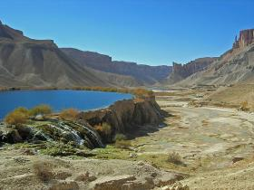
Band-e Amir Lakes
Splashes of blue in an otherwise monotonous lunar landscapeThe lakes of Band-e Amir are an incredibly stunning sight. Six deep blue lakes suddenly appear like sparkling jewels in the middle of the barren grey wasteland of Central Afghanistan that stretches as far the eye can see. The lakes’ waters are composed of a high mineral content, which is responsible for the deep blue colour of the lakes.
Travertine walls between and around the lakes have created natural dams, that store the rainwater, which flows from the cracks and fissures of the surrounding rocks. Around the shore of the lake Band-e Haibat the travertine walls reach a height of twelve meters, creating an otherworldy effect of some sort of natural infinity pool. The overspilling water of the lake creates small waterfalls along the outer rim of the travertine walls.
According to local legend, the lakes were formed as the result of a series of miracles performed by Ali, son-in-law of the Prophet Mohammed, which left the local king so amazed that he immediately decided to convert to Islam. A shrine to Ali to honour his miraculous works stands on the shore of one of the lakes.
If one day the tourism industry in Afghanistan gets going, the Band-e Amir lakes are likely to become the country’s prime tourist attraction. Even today, the lakes are a favorite destination for day trips, and they exude an often joyful and almost festive atmosphere – a rarity in Afghanistan, which makes the lakes popular among locals and expats alike. This atmosphere at the lakes is a unique reminder of the days when Afghanistan was firmly placed on the tourist map, as the country was part of the famous Hippie Trail from Istanbul to Northern India.
In 2009, the country's first national park was created around the vicinity of the lakes. While still open to visitors, there is harsh terrain, mined unpaved roads, and no real basic facilities. Only a thin track of road is safe to travel on, so adventure wisely.
Read more about Band-e Amir Lakes on Atlas Obscura...
Category: Natural Wonders, Watery Wonders, Martian Landscapes, Geological Oddities
Location: Band-e Amir, Iran
Edited by: Tawsam, Rachel, pfasta